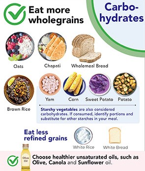
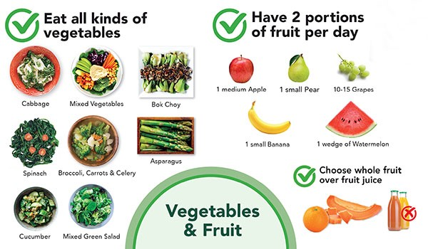
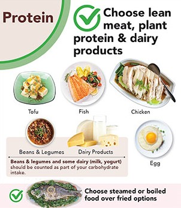

LIVE HEALTHY
Wholegrains
Eating whole grains like brown rice, oats, and quinoa is beneficial for health due to their high fiber content, which aids in digestion and helps maintain a healthy weight by keeping you fuller for longer. Whole grains are also rich in essential nutrients such as B vitamins, iron, and magnesium, which support various bodily functions including energy production and immune system health. Additionally, regular consumption of whole grains has been linked to a reduced risk of chronic diseases like heart disease, diabetes, and certain cancers.
Fruits and Vegetables
Fruits and vegetables are packed with essential vitamins, minerals, and antioxidants that are vital for overall health and well-being. They help reduce inflammation, boost the immune system, and protect against a variety of diseases, including heart disease, stroke, and certain types of cancer. The high fiber content in fruits and vegetables supports digestive health and helps prevent constipation. Additionally, the wide range of phytochemicals found in these foods can improve skin health, enhance vision, and promote a healthy aging process.
Protiens
Including adequate protein in your diet is crucial for maintaining and repairing tissues, producing enzymes and hormones, and supporting muscle growth and strength. High-quality protein sources like lean meats, fish, eggs, beans, and nuts provide essential amino acids that the body cannot produce on its own. Protein also plays a key role in weight management by promoting satiety and reducing overall calorie intake. Furthermore, protein-rich diets can improve bone health and enhance the body’s ability to recover from injury or illness.